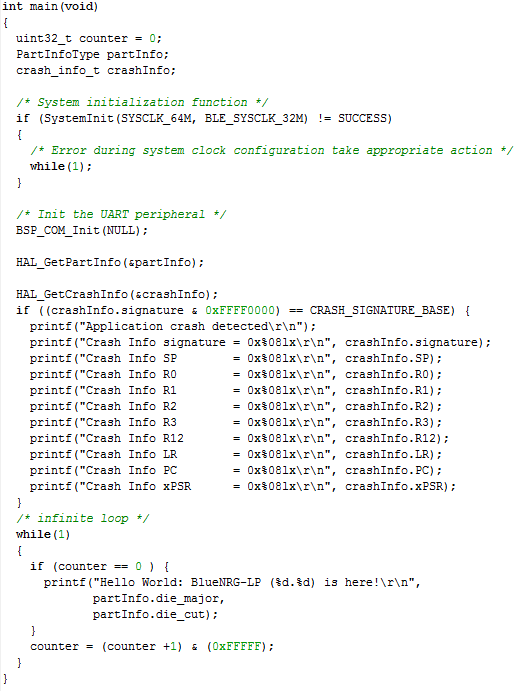
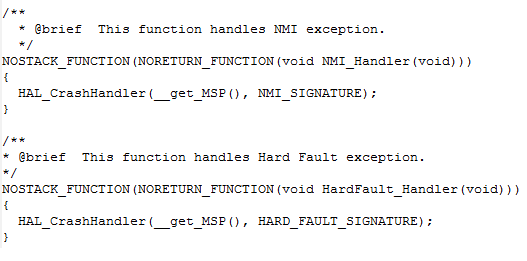

This document provides some useful debugging guidelines to be followed when debugging Bluetooth LE applications, programming Bluetooth LE applications using CMIS-DAP tool and how to use the crash handler utilities
Debug a BlueNRG-LP/BlueNRG-LPS Bluetooth LE application
Debug vs Bluetooth LE radio operations
- BlueNRG-LP/BlueNRG-LPS Bluetooth LE radio operations are driven by the radio timer ISR:
-
Every time the radio ISR is called, in order to maintain the synchronization with the connection event, the next timeout is programmed with the new value according the actual value.
-
BlueNRG-LP/BlueNRG-LPS has a Bluetooth LE radio: if the execution is stopped for debug purpose, this will imply some delay on the radio ISR management which could lead to connection lost and bad radio behavior:
-
i.e.: if the application stops the code execution, the synchronization can’t be maintained and the connection can be lost;
-
i.e.: if the application stops the code execution, in case of advertising a back to back communication can be started.
-
As consequence, when debugging a Bluetooth LE application, please take in account that radio communication can be compromised and the connection can be lost
Debugging vs BlueNRG-LP/BlueNRG-LPS running application in low power modes
- There are certain situations where debug access is disabled and the chip cannot be accessed, including:
-
application that disables SWD debug pins (SWDIO: PA2; SWCLK: PA3;)
-
application that sets the device in DEEPSTOP mode (HAL_PWR_MNGR_Request() API configured with POWER_SAVE_LEVEL_STOP_NOTIMER or POWER_SAVE_LEVEL_STOP_WITH_TIMER), in which the debug port is not powered.
- These cases are common during application development and device can end up in a state where debug access is no longer possible.
- To recover this situation, the following options are recommended:
-
Do not use the DEEPSTOP mode by changing call to HAL_PWR_MNGR_Request() as follow:
-
HAL_PWR_MNGR_Request(POWER_SAVE_LEVEL_CPU_HALT, 0, 0);
In this mode, CPU will never goes to DEEPSTOP and debug access is always granted. Application has to be modified and execution time may be different
-
Use a GPIO to wakeup the system and grant access to the debugger. User may need to change the call to HAL_PWR_MNGR_Request as follow:
-
HAL_PWR_MNGR_Request(POWER_SAVE_LEVEL_STOP_NOTIMER, wakeupIO, &stopLevel);
-
Where: WakeupSourceConfig_TypeDef wakeupIO = {0, WAKEUP_PA8, 0, 0}; /* example of wakeup from PA8 */ When debugger access is wanted, user should force the wakeup I/O (IO13 in the example) low and then use the “Attach to running target” in the debugger.
CMSIS-DAP programming vs BlueNRG-LP/BlueNRG-LPS running application in low power modes
- When the BlueNRG-LP/BlueNRG-LPS device is in DEEPSTOP mode, the SWD port is disabled:
-
Put the PA10 pin high and then reset the BlueNRG-LP/BlueNRG-LPS device: UART bootloader is activated and user can program the selected application (with POWER_SAVE_LEVEL_CPU_HALT sleep mode parameter)
-
On BlueNRG-LP/STEVAL-IDB011V{1|2}, BlueNRG-LPS/STEVAL-IDB012V1 just keep pressed the button PUSH1 and then press the RESET button to put the device in UART bootloader mode.
-
Perform a mass erase of the device using the RF-Flasher Utility tool (which uses the BlueNRG-LP/BlueNRG-LPS UART bootloader) and then program the selected application (with POWER_SAVE_LEVEL_CPU_HALT sleep mode parameter)
BlueNRG-LP/BlueNRG-LPS Crash Handler utilities
- Some crash handler utilities/structures are provided on BlueNRG-LP DK SW package framework: \Middlewares\ST\hal\Inc\crash_handler.h, Hal_miscutil.h files and \Middlewares\ST\hal\src\hal_miscutil.c file:
-
crash_info_t structure: it defines the overall crash information structure (stack pointer, program counter, registers, ...).
-
HAL_GetCrashInfo(&crash_info): it allows to return the crash information that are stored in RAM, by hard handler, nmi handler and assert handler.
-
HAL_CrashHandler(msp,signature) : it allows to store crash information in RAM and reset the device (crash information can be retrieved by using API HAL_GetCrashInfo() function).
BlueNRG-LP/BlueNRG-LPS Crash Handler utilities: basic example
|

|
| Figure 1: BlueNRG-LP/BlueNRG-LPS crash handler basic example |
- Figure 1 shows the main application of a BlueNRG-LP/BlueNRG-LPS Bluetooth LE applicaton using the crash handler HAL utility HAL_GetCrashInfo()
-
crash_info variable defines the variable where crash info information are stored
-
HAL_GetCrashInfo(&crash_info) allows to get the crash information
-
At reset, if an assert occurs, application will detect it (if (crash_info.signature&0xFFFF0000) == CRASH_SIGNATURE_BASE))
-
By analyzing the crash_info data (registers, stack pointer, programm counter value), user can get some useful information in order to identify issue root cause.
BlueNRG-LP/BlueNRG-LPS Crash Handler utilities: basic example
|

|
| Figure 2: BlueNRG-LP/BlueNRG-LPS NMI and Hard Fault handler information storage |
- Figure 2 shows the usage of the HAL_CrashHandler() utility function, in order to store NMI and Hard Fault exception crash information on related interrupt handlers:
-
HAL_CrashHandler(__get_MSP(), NMI_SIGNATURE); on BlueNRG-LP/BlueNRG-LPS NMI_Handler() irq handler;
-
HAL_CrashHandler(__get_MSP(), HARD_FAULT_SIGNATURE); on BlueNRG-LP/BlueNRG-LPS HardFault_Handler() irq handler;
References
- Refer to BlueNRG-LP Middlewares, HAL APIs doxygen documentation, crash_handler.h, hal_miscutil.h files for crash handler structures and APIs utilities details.
 1.8.10
1.8.10